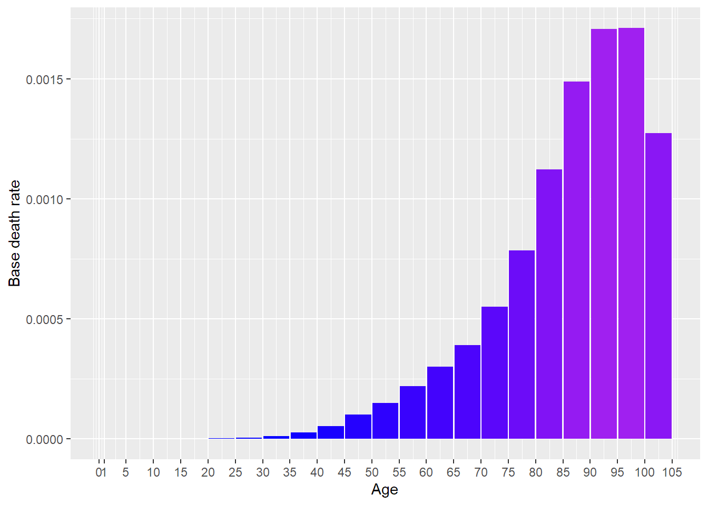
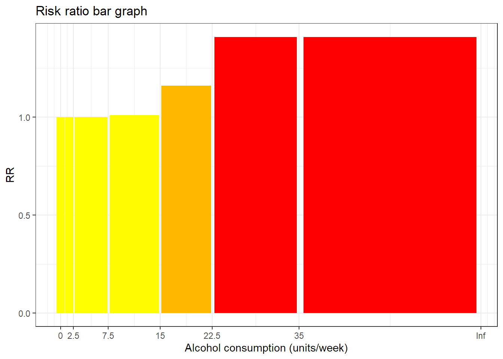
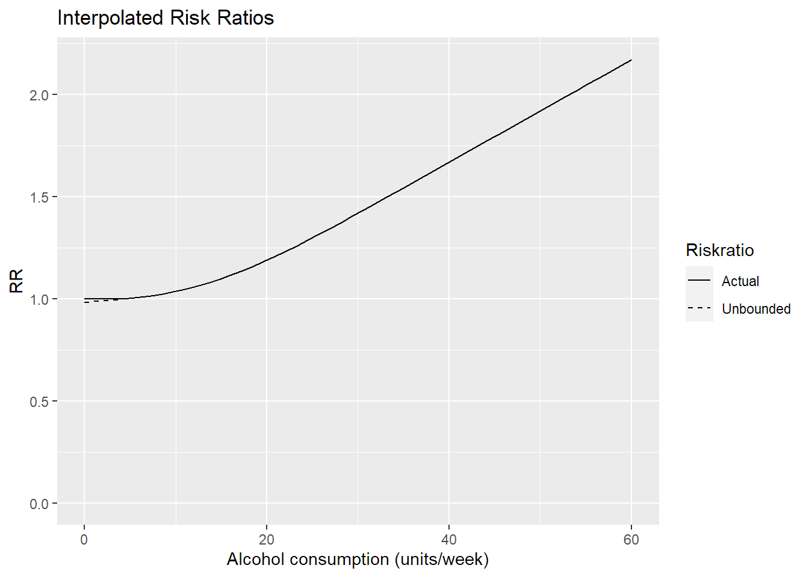
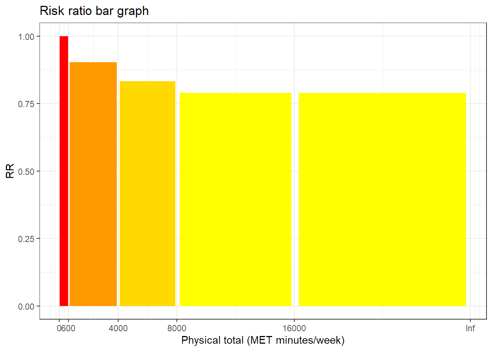
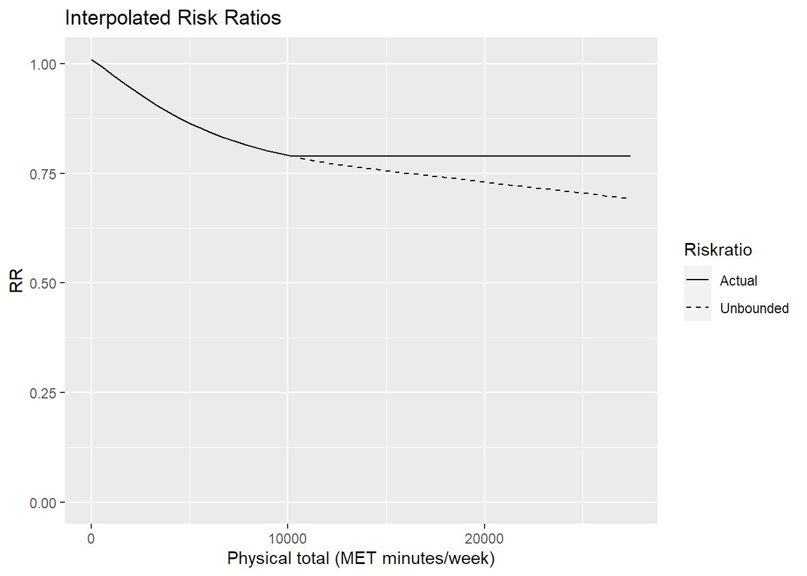
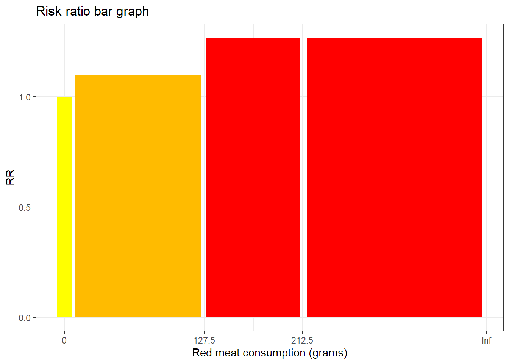
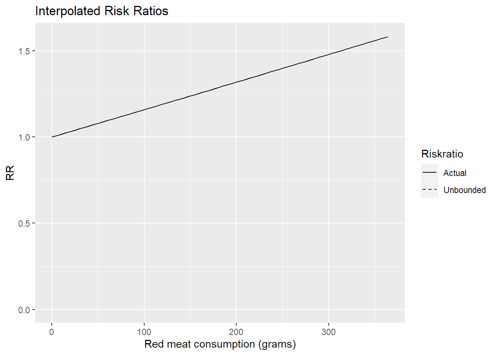

[auto-generated file]
Colon cancer is a death cause. It means that there is a certain probability that one dies from this.
In the model Colon cancer has the following risk factors
In 2014 Colon cancer was responsible for 1.99% of the deaths in the US. Below is a plot of how prevalent the death was for different ages (Xu et al. 2016)

The definition of dying from Colon cancer is to get any of the following ICD codes as the main cause of death on one’s death certificate. The percentage is the proportion of the deaths from Colon cancer who falls under the ICD code
The combined risk ratio of all risk factors is computed using the formula
\[ RR=RR_{\text{Alcohol}} \cdot RR_{\text{Phys. total}} \cdot RR_{\text{Red meat}} \]
The normalization factor is based on the joint distribution of all the risk factors and is computed using the formula
\[ P=P_{\text{Alcohol}} \cdot P_{\text{Phys. total}} \cdot P_{\text{Red meat}} \]
Alcohol consumption is a risk factor for Colon cancer.
Below is a plot of the risk ratios we have taken from the literature alterated to fit our model

Because the variable Alcohol consumption is numeric, we have computed a smoothed approximation. 
Total physical activity time is a risk factor for Colon cancer.
Below is a plot of the risk ratios we have taken from the literature alterated to fit our model

Because the variable Total physical activity time is numeric, we have computed a smoothed approximation. 
Red meat consumption is a risk factor for Colon cancer.
Below is a plot of the risk ratios we have taken from the literature alterated to fit our model

Because the variable Red meat consumption is numeric, we have computed a smoothed approximation. 
“ICD Order Files 2014.” n.d. https://www.cdc.gov/nchs/icd/icd10cm.htm.
Xu, Jiaquan, Kenneth D Kochanek, Sherry L Murphy, and Betzaida Tejada-Vera. 2016. “Deaths: Final Data for 2014.” National Vital Statistics Reports 65 (4).